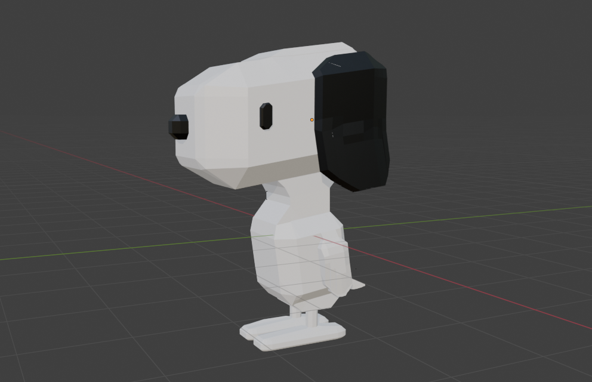

This is the first blender/animation project we did, it was in teams and in collaboration with the 3rd years

The Snoopy I madeThe final animation
Final Project (3D Character)
For this final project, I decided to try and turn a 2D character I created in sec 2 (and draw pretty much everywere)
into a 3D character using blender. Hopefully, I will then be able to animate him doing something random.